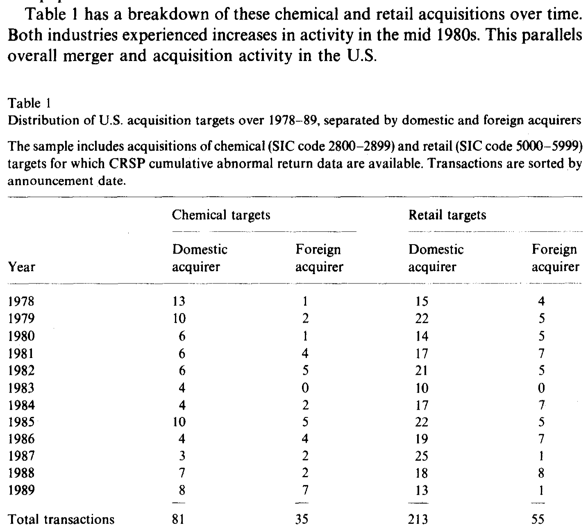
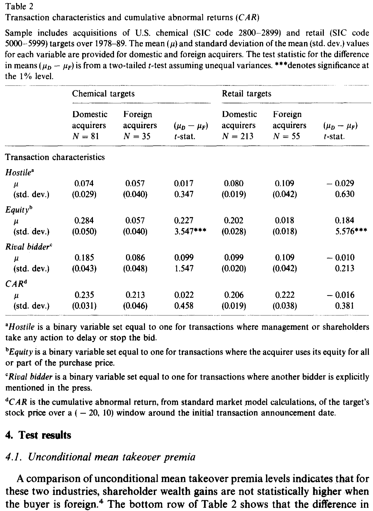
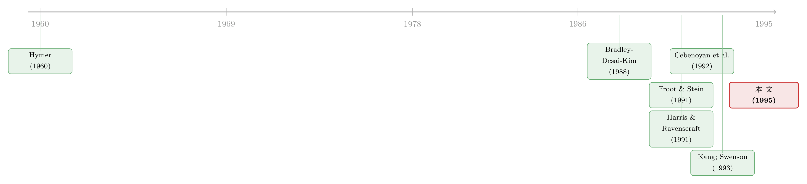

外资买美国公司，真的出价更高吗？——一道被「行业」搅浑的老问题
本文读的是 Dewenter (1995, Journal of Financial Economics)：当时已有五篇论文一致声称「外资收购美国公司时，给目标股东的溢价显著高于本土买家」。本文把样本收窄到化工与零售两个行业，发现这个差距消失了——并指出前人结论多半是「跨行业汇总」制造出来的假象。但故事没有就此结束：外资并非对一切都「一视同仁」，他们在敌意收购里出价更高、在有竞价对手时反而出价更低。
1 一个看上去已成定论的「事实」
先说一个上世纪九十年代初公司金融里几乎被当成共识的经验规律。
外国投资者来美国买公司，似乎总是更舍得花钱。Harris 和 Ravenscraft (1991) 算出来的差距是 0.134——也就是说，目标公司的股东在外资收购里平均能多拿 13.4 个百分点的累计超额收益；Swenson (1993) 的数字是 0.108。再加上 Cebenoyan、Papaioannou 和 Travlos (1992)、Kang (1993)、Marr 等人 (1991)，五篇论文，众口一词：外资付得更多，而且显著。
围绕「为什么更多」，文献也热闹地给出了一串解释：有人说是汇率（美元越便宜，受信贷约束的外国投资者就越买得起，见 Froot and Stein, 1991），有人说是税制变化，有人说是外资偏好的行业本身竞争更激烈、潜在买家更多。每一种解释都试图为那个「显著的差距」找一块拼图。
但所有这些论文，用的是同一套做法：把来自各行各业的收购案合在一起，跑一个横截面回归，控制住国内文献和 FDI 文献里能想到的一切变量，然后看「外资」这个虚拟变量的系数。
于是一个自然的问题是：如果这个「事实」从一开始就被汇总的方式扭曲了呢？
2 把样本「切薄」：本文的核心思路
Dewenter 的做法，简单到近乎固执——只在一个行业内部比较。
她选了两个行业：化工（SIC 代码 2800–2899）和零售（SIC 代码 5000–5999）。理由也很实在：这两个行业合起来占了全美整体并购活动的 16%、外资并购活动的 17%，体量够大；化工和零售的目标公司也比「机械」或「商业服务」之类更容易干净地识别出来；更妙的是，一个是制造业、一个是服务业，正好能对照。
为什么「切薄」这件事如此关键？这里要先讲清楚作者心里那张「理想」的图。如果真要彻底回答「不同国别的买家边际上创造了多少价值」，理想的设定应当允许截距和斜率都随买家国别、目标行业变化：
这里 i 是买家国别，j 是目标行业，z 是解释变量的编号。请注意这个设定的两层含义：第一层是截距 \(\beta_{ij}\)，对应「平均溢价水平」；第二层是斜率 \(\alpha_{ijz}\)，对应「溢价对某个特征的敏感度」。
前人的做法，本质上是把 \(j\)（行业）这一维强行抹平——他们假设各行业的溢价水平可以混在一起，只保留「国别」这一个差异。Dewenter 的反问是：万一 \(\beta_{ij}\) 真的随行业 \(j\) 大幅变化，而外资与本土收购在行业上的分布又不均匀，那么把它们汇总，就会把行业间的差异误读成国别间的差异。这正是计量上的聚合偏误 (aggregation bias)。
这其实是一个非常一般的教训：当你比较两组对象的「平均数」差异时，若两组在某个第三维度上的分布不同，而结果变量又沿着那个维度系统地变化，那么平均数之差里就掺进了一笔「混合（composition）」的账。关于「平均数如何掩盖真相」的另一个并购例子，可参见《赚了 1.1%，却亏掉 3030 亿：并购里那个被「平均」藏起来的规模效应》。
3 怎么量「溢价」：累计超额收益
在进入结果之前，先交代度量。作者用累计超额收益 (cumulative abnormal returns, CAR) 来代表「收购溢价」——文中「takeover premia」「shareholder wealth gain」「CAR」三个词是混用的。
标准市场模型一步步是这样的。先估个股对市场的关系：
$$R_{it} = \alpha_i + \beta_i R_{mt} + \varepsilon_{it}$$
由此得到期望（正常）收益：
$$E(R_{it}) = \hat{\alpha}_i + \hat{\beta}_i R_{mt}$$
某一天的超额收益就是实际减去期望：
$$AR_{it} = R_{it} - E(R_{it}) = R_{it} - \hat{\alpha}_i - \hat{\beta}_i R_{mt}$$
最后在公告日（\(t=0\)）前后的窗口里累加：
$$CAR_i = \sum_{t=-20}^{+10} AR_{it}$$
参数 \(\hat{\alpha}_i\)、\(\hat{\beta}_i\) 用公告前 250 个交易日的数据估出来。主结果报告的是这个 31 天的「大窗口」$(-20, +10)$；作者也试过 5 天的「小窗口」$(-3, +1)$，以及可变窗口、实际成交价两种替代度量——结论一致，没有任何一种度量能拒绝「本土与外资溢价相等」。Brown 和 Warner (1980, 1985) 早已说明，这类度量的细节变化对事件研究的结论影响甚微。
样本本身：化工 116 起（本土 81、外资 35），零售 268 起（本土 213、外资 55），时间跨度 1978–89。如表 1 所示，两个行业的并购活动都在 1980 年代中期放量，与全美并购大势同步——而本土与外资在时间上的分布并不一致，这一点稍后会回来咬一口。

Table 1: has a breakdown of these chemical and retail acquisitions over time
4 反转之一：行业内部，差距没了
现在看核心结果。
表 2 的最后一行给出了关键对照。化工行业，本土买家给目标股东带来的 CAR 是 0.235，外资是 0.213，差 0.022，t 值只有 0.458；零售行业，本土 0.206、外资 0.222，差 -0.016（注意：符号反过来了，外资还略高一点点），t 值 0.381。两个行业里，本土与外资溢价之差都不到一个标准误，从未显著。

Table 2
把这个 0.022／-0.016 和前人的 0.134、0.108 摆在一起，落差是刺眼的。同一个变量（外资 vs 本土），换一种样本组织方式，「显著的 13 个百分点」就蒸发成了「方向都说不准的零」。
那么，前人的差距究竟从哪儿来？作者逐一排查了两条汇总偏误的路径。
第一条是行业汇总。 若外资并购恰好集中在「高溢价行业」，把所有行业混在一起算平均，自然显得外资付得多。Cebenoyan 等 (1992) 确实记录了「某行业外资并购的相对美元规模」与「该行业目标股东财富收益」之间显著的正相关——这等于为「外资扎堆在高溢价行业」提供了证据。
第二条是时间汇总。 表 1 显示本土与外资在年份上分布不同：41% 的本土化工收购发生在三个最高平均 CAR 的年份（1978、1979、1985），而外资只有 23%。但作者在回归里加入年份虚拟变量后，结果纹丝不动；而且 Swenson (1993) 和 Harris-Ravenscraft (1991) 本来就控制了年份却仍得到显著差异。所以时间不是主犯，行业才是。
于是第一个反转落地：所谓「外资出价更高」，很可能是一个被行业混合制造出来的统计幻觉。
5 反转之二：外资并非「一视同仁」
如果故事到这里就结束，那它不过是一篇「我推翻了前人」的论文。但真正有意思的一步在后头。
作者接着问：本土与外资买家，平均溢价相等，是否意味着市场对他们的反应「完全一样」？
答案是否定的。第二个发现是：溢价对交易特征的敏感度（也就是前面那个斜率 \(\alpha_{ijz}\)）在两类买家之间确实不同。具体而言——
- 在敌意收购（hostile，目标管理层或股东采取任何延阻措施时取 1）里，外资投资者付得比本土更多；
- 在有竞价对手（rival bidder，媒体明确提到有其他竞标者时取 1）时，外资反而付得比本土更少。
这两个方向合在一起，画出了一幅比「外资更慷慨」精细得多的图景：市场对买家国别的反应，是紧紧绑定在交易情境上的。换句话说，「外资 vs 本土」不是一个能用单一系数概括的标签——它在不同的交易特征下，符号甚至会翻转。作者强调，此前没有任何一篇论文同时检验过这些变量上的差异，这正是本文条件分析的增量所在。
需要诚实地说明一处局限：第二个发现来自条件回归（论文中的后续表格），但本文所能引用的正文部分到此被截断，无法逐一核对这些斜率系数的具体数值与 t 值。因此这里只复述作者明确陈述的方向性结论（外资在敌意交易付更多、在有对手时付更少），不替它编造任何量级。
这里还藏着一个值得玩味的描述性事实：表 2 上半部分显示，本土买家显著更爱用股权支付——本土化工买家 28.4% 用股权，外资只有 5.7%（t = 3.547）；零售更悬殊，本土 20.2% vs 外资 1.8%（t = 5.576）。而敌意与竞价对手的发生率，在本土与外资之间则没有显著差别。支付方式上这道巨大的鸿沟本身就提示：本土与外资买家面对的，是结构相当不同的交易。
至于 FDI 文献念念不忘的两个变量——汇率和税制——本文给出的是「祛魅」式的结论：1980 年代两次美国税改（1981 ERTA、1986 TRA，理论见 Scholes and Wolfson, 1990）对本土-外资溢价差没有解释力，这与 Kang (1993)、Harris-Ravenscraft 一致；而与多数前人不同，这些溢价没有显著的汇率弹性。
6 文献脉络
把这条线索捋一捋，能看清本文站在哪里。
最上游是 FDI 的理论传统。Hymer (1960) 提出外国投资者相对本土存在「成本劣势」（文化差异、地理距离），Aliber (1970, 1983) 则从「可分离货币区」出发，认为强货币区的投资者享有融资优势——但这两套理论都没有把论点直接连到「收购溢价」上。
到了 1990 年代初，一波实证浪潮把 FDI 理论和并购事件研究焊在了一起。Froot 和 Stein (1991) 的不完美资本市场模型把汇率推上前台；Harris 和 Ravenscraft (1991)、Swenson (1993) 验证了溢价的汇率敏感性；Cebenoyan 等 (1992) 把外资强度与目标财富收益挂钩；Kang (1993) 则细看日本买家的特征。它们共同铸成了那个「外资付得更多」的共识。

Dewenter (1995) 的位置，是对这一整波实证结论的稳健性审计。她没有去争论「目标超额收益是不是衡量边际价值的好指标」这个前提（她明说不处理这些假设），而是把矛头对准了一个更朴素的经验问题：当你换一种汇总方式，那个结论还在不在。这种「把广为接受的横截面结果切回行业内部」的方法论自觉，和后来许多重估并购、外资行为的研究一脉相承——比如关于「外资到底是不是一种特殊的持有人」，可参见《「外资偏好」是个伪命题——他们只是机构而已》；关于外资长期影响的当代再审视，可参见《外资真是「蝗虫」吗？——一次跨 30 国的长期投资体检》。
7 评论与延伸（Q&A + 研究方向）
(a) 几个可能的疑问
Q：只看两个行业，结论能推广吗？
这是本文最大的软肋，作者自己也在结论里承认。化工和零售各代表了一种「特征与趋势的独特组合」，外推需谨慎。它能稳妥地证明的是「前人的跨行业结论不稳健」，而非「在所有行业里外资都不付更高溢价」。它是一个证伪性的结果，不是一个普适的新规律。
Q：样本这么小（外资化工才 35 起），会不会只是「检验功效不足」，所以测不出差异？
这个担忧是合理的——小样本确实更难拒绝原假设。但作者用四种不同的溢价度量、加年份虚拟变量等多种设定反复检验，结论始终一致地「不显著」，且点估计本身就小到
0.022、甚至在零售里符号为负。不是「差异存在但测不出」，更像是「差异本就不大」。
Q：为什么「行业」会比「时间」更关键？
因为作者直接做了对照实验：把年份虚拟变量塞进回归，结果不变；而前人本来就控制了年份却仍得到显著差异——这就排除了时间。剩下唯一未被前人妥善处理、又能产生混合的维度，就是行业。逻辑上的「排除法」让行业成了主嫌。
Q：本土买家更爱用股权支付，这会不会污染溢价比较？
很可能正是机制的一部分。Huang 和 Walkling (1987) 早就指出现金要约的超额收益显著高于股票要约。本土用股权的比例高出外资一大截（
28.4%vs5.7%），若不在行业内、不控制支付方式地比，这个差异就会渗进「国别」系数里——这恰好佐证了作者「敏感度（斜率）才是关键」的主张。
Q：第二个发现（敌意付更多、有对手付更少）在经济上讲得通吗？
讲得通。敌意交易里外资愿出更高价，或许反映他们对「拿下这块战略资产」估值更高、或更不愿空手而归；而有竞价对手时出价更低，可能是外资在信息劣势下（Hymer 式的成本劣势）更早退出竞价、不愿卷入抬价战。两者都指向「外资面对的成本-收益结构与本土不同」，而非简单的「更慷慨」。
Q：这对「目标超额收益 = 边际价值」这个核心假设说了什么？
本文刻意不回答这个问题。作者反复声明，她检验的是前人结果的稳健性，而非其前提的有效性。所以它既没有捍卫、也没有推翻「用 CAR 衡量买家边际价值」这套方法——它只是说，在这套方法之内，结论也比想象中脆弱。
(b) 几个可能的研究问题与提案
1. 把「行业内比较」搬到公司债与信用市场
【经济故事】外资收购方接手后，目标公司的债权人财富如何变化？外资母公司的隐性担保、不同国别的破产法与债权人保护，可能让信用利差对「买家国别」的反应也存在被行业混合掩盖的异质性。 【可行性】中。需要 TRACE 债券交易数据 + Mergent FISD 匹配并购事件 + 买家国别。识别上同样可用「行业内对照」，但外资收购里目标有公开债的样本会偏小，需放宽到 2000 年后以保证样本量。
2. 用现代大样本重做这场「聚合偏误」审计
【经济故事】Dewenter 的核心论点是方法论的，而非行业特定的。在 SDC Platinum 覆盖的几千起跨境并购上，能否系统地分解「外资溢价」中有多少来自真实的国别效应、多少来自行业与时间的组合？ 【可行性】高。SDC + CRSP/Compustat 即可。可用 Oaxaca-Blinder 分解或固定效应逐层加入（行业、年份、行业×年份）来量化每一层吸收掉多少「外资系数」，这是一个干净、可直接执行的复制-扩展项目。
3. 支付方式作为中介变量的因果拆解
【经济故事】本土买家偏好股权、外资偏好现金，这道鸿沟是否本身就是「外资溢价之谜」的中介？把支付方式当作 mediator，能不能把所谓国别效应进一步「解释掉」？ 【可行性】中。数据现成，难点在因果识别——支付方式是内生的（与目标质量、信息不对称相关），需要找支付方式的工具变量（如买方账面现金、汇率冲击对融资成本的影响）才能谈中介效应，否则只能停在描述层面。
4. 外资在敌意 vs 竞价情境下的非对称出价，能否用信息劣势模型刻画？
【经济故事】本文第二个发现提示外资的出价行为依情境翻转。一个 Hymer 式「外资有信息/成本劣势」的竞价模型，是否能同时预测「敌意付更多、有对手付更少」？把它写成一个带私人信息的拍卖模型并拿数据校准，会很漂亮。 【可行性】中偏低。理论部分 doable；实证校准需要逐笔竞价过程数据（toehold、出价轮次、对手身份），这类数据稀缺且需手工搜集，样本会很小。
8 我的判断
这篇论文的贡献，不在于发现了什么新机制，而在于一记漂亮的方法论警钟：一个被五篇论文反复确认、还配齐了汇率、税制、竞争三套解释的「事实」，可能从根上就是汇总方式的产物。把样本切回行业内部，0.134 的差距坍缩成 0.022——这个对照本身就极具说服力，也提醒我们对任何「跨异质单元求平均」的横截面结论保持警惕。更可贵的是，作者没有止步于「拆台」，而是用条件分析翻出了一个更细的真相：外资不是更慷慨，而是对情境更敏感。
对识别的担忧，我有两点。其一是外部效度——两个行业、且外资子样本仅 35 与 55 起，作者的诚实值得尊敬，但读者确实无法据此对「所有行业」下结论；这是一个证伪而非建构的结果。其二是「行业内比较」虽然吸收了行业固定效应，却没有处理行业内部的选择性：外资在化工里收购的，可能系统地不同于本土收购的标的（市场份额、R&D、是否被挂牌出售），而这些恰恰会影响溢价。作者在脚注里提到这些买卖方特征「分布有别但无解释力」，但这更接近稳健性陈述，而非严格的识别论证。
后续我最想看到的，是把这套「聚合偏误审计」用现代大样本系统地跑一遍（上面提案 2），并真正把支付方式这个被忽视却差异巨大的维度，从「国别效应」里干净地剥出来。如果「外资溢价之谜」最终大半能由行业组合 + 支付方式 + 竞价情境解释掉，那么这篇 1995 年的小样本论文，就是最早把手指准确地按在病灶上的那一篇。
参考文献
Aliber, R.Z. (1970). A theory of foreign direct investment. In C.P. Kindleberger (ed.), The International Corporation. MIT Press.
Bradley, M., Desai, A., & Kim, E.H. (1988). Synergistic gains from corporate acquisitions and their division between the stockholders of target and acquiring firms. Journal of Financial Economics 21, 3–40.
Brown, S.J., & Warner, J.B. (1985). Using daily stock returns: The case of event studies. Journal of Financial Economics 14, 3–31.
Cebenoyan, A.S., Papaioannou, G.J., & Travlos, N.G. (1992). Foreign takeover activity in the U.S. and wealth effects on target firm shareholders. Financial Management (Autumn), 58–68.
Dewenter, K.L. (1995). Does the market react differently to domestic and foreign takeover announcements? Evidence from the U.S. chemical and retail industries. Journal of Financial Economics 37(3), 421–441.
Froot, K.A., & Stein, J.C. (1991). Exchange rates and foreign direct investment: An imperfect capital markets approach. Quarterly Journal of Economics 106(4), 1191–1217.
Harris, R.S., & Ravenscraft, D. (1991). The role of acquisitions in foreign direct investment: Evidence from the U.S. stock market. Journal of Finance 46(3), 825–844.
Huang, Y.S., & Walkling, R.A. (1987). Target abnormal returns associated with acquisition announcements: Payment, acquisition form, and managerial resistance. Journal of Financial Economics 19, 329–350.
Hymer, S.H. (1960). The International Operations of National Firms: A Study of Direct Foreign Investment. Ph.D. dissertation, MIT.
Kang, J.K. (1993). The international market for corporate control: Mergers and acquisitions of U.S. firms by Japanese firms. Journal of Financial Economics 34, 345–372.
Scholes, M.S., & Wolfson, M.A. (1990). The effects of changes in tax laws on corporate reorganization activity. Journal of Business 63, S141–S164.
Swenson, D. (1993). Foreign mergers and acquisitions in the United States. In K.A. Froot (ed.), Foreign Direct Investment. University of Chicago Press, 255–286.